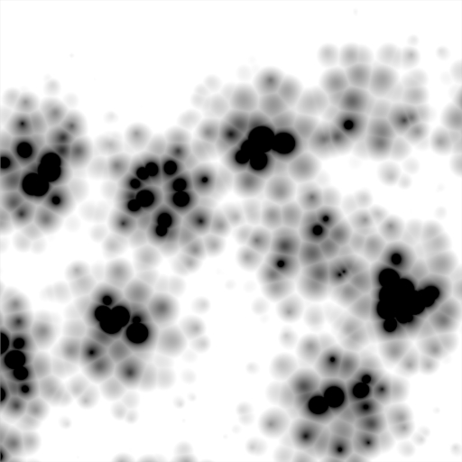

Musgrave¶
Musgrave Texture Panels.
- Often used for
- Organic materials, but it’s very flexible. You can do nearly everything with it.
- Result(s)
- Intensity
Options¶
- Type
This procedural texture has five noise types on which the resulting pattern can be based and they are selectable from a dropdown menu at the top of the tab. The five types are:
- Hetero Terrain
- fBm
- Hybrid Multifractal
- Ridged Multifractal
- Multifractal
These noise types determine the manner in which Blender layers successive copies of the same pattern on top of each other at varying contrasts and scales.
例子 with Basis : Voronoi F1 - Dimension : 0.5 - Lacunarity : 0.15 - Octave: 2.0

Hetero Terrain. |

Hybrid Multifrct. |

Ridged Multifrct. |

Multifractal. |
{kind=link}
{kind=link}
The main noise types have four characteristics:
- Dimension
- Fractal dimension controls the contrast of a layer relative to the previous layer in the texture. The higher the fractal dimension, the higher the contrast between each layer, and thus the more detail shows in the texture.
- Lacunarity
- Lacunarity controls the scaling of each layer of the Musgrave texture, meaning that each additional layer will have a scale that is the inverse of the value which shows on the button. i.e. Lacunarity = 2 –> Scale = 1/2 original.
- Octaves
- Octave controls the number of times the original noise pattern is overlayed on itself and scaled/contrasted with the fractal dimension and lacunarity settings.
- Intensity
- Light intensity. Called Offset for Hetero Terrain.
The Hybrid Multifractal and Ridged Multifractal types have these additional settings:
- Offset
- Both have a “Fractal Offset” button that serves as a “sea level” adjustment and indicates the base height of the resulting bump map. Bump values below this threshold will be returned as zero.
- Gain
- Setting which determines the range of values created by the function. The higher the number, the greater the range. This is a fast way to bring out additional details in a texture where extremes are normally clipped off.